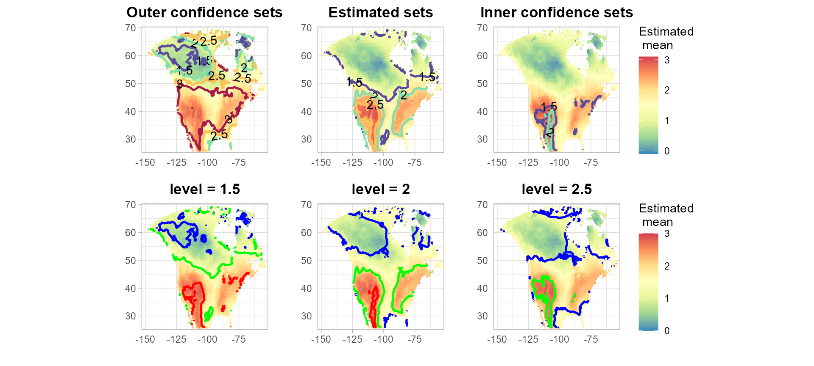

Geographic_Data_Examples.RmdThe following example is for displaying the Confidence sets for the increase of the mean summer temperature (June–August) in North America between the 20th and 21st centuries according to the specific climate model analyzed in Sommerfeld et al.(2018).
library(patchwork)
library(nlme)
library(SCoRES)
library(ggplot2)
# Load data
data(climate_data)
start_time <- Sys.time()
# construct confidence sets for the increase of the mean temperature (June-August) in North America between the 20th and 21st centuries
temp = SCB_gls_climate(Z = climate_data$Z,
level = 2,
X = climate_data$X,
w = c(1,0,0,0),
correlation = climate_data$correlation,
mask = climate_data$mask,
alpha = 0.1)
end_time <- Sys.time()
time_taken <- end_time - start_time
print(time_taken)
#> Time difference of 8.686077 minsHeat maps show the estimate of the mean temperature difference. The first row displays the contours of the outer confidence sets, estimated inverse set, and the inner confidence sets, for various levels. The three plots in the second row display the confidence sets for the inverse sets, where the estimated mean difference is greater or equal to the individual level 1.5, 2.0, or 2.5 respectively. In the second row, the blue line is the contour of the outer confidence set, the green line is the contour of the estimated inverse set and the red line is the contour of the inner confidence set.
par(mfrow = c(2, 3), mar = c(3, 3, 2, 1))
p2 = plot_cs(list(scb_up = temp$scb_up[17:215,22:110], scb_low = temp$scb_low[17:215,22:110]), levels = c(1.5, 2,2.5,3), x = temp$x[17:215], y = temp$y[22:110], mu_hat = temp$mu_hat[17:215,22:110], xlab = "", ylab = "", level_label = T, min.size = 40, palette = "Spectral", color_level_label = "black")
p1 = plot_cs(list(scb_up = temp$scb_up[17:215,22:110], scb_low = temp$scb_low[17:215,22:110]), levels = c(1.5,2,2.5), x = temp$x[17:215], y = temp$y[22:110], mu_hat = temp$mu_hat[17:215,22:110], xlab = "", ylab = "",together = F)
p = p2/p1
p